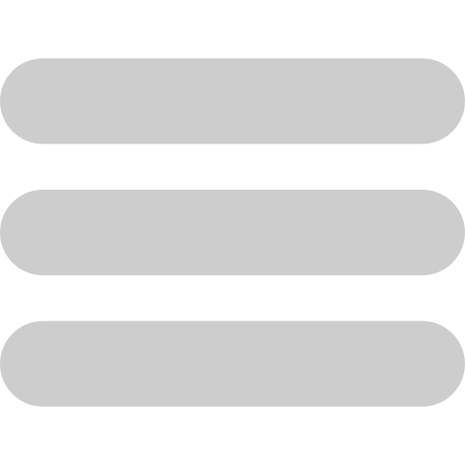

Ajustes de Perfil
Nombre de Usuario
Cambiar contraseña
Fecha de Nacimiento
Horario de Estudio más Habitual
¿Cuáles consideras que son tus 2 distracciones más comunes?
Selecciona una distracción
Redes sociales
Mensajería instantánea
Notificaciones del teléfono
Correo electrónico
Plataformas de video
Juegos móviles o en línea
Scroll infinito
Compras online
Ruidos externos
Interrupciones de otras personas
Hambre o sed
Falta de comodidad
Desorden en el espacio de trabajo
Mascotas
Pensamientos intrusivos
Sueño/fatiga
Aburrimiento
Multitarea
Día soñando despierto
Estrés o ansiedad
Selecciona una distracción
Redes sociales
Mensajería instantánea
Notificaciones del teléfono
Correo electrónico
Plataformas de video
Juegos móviles o en línea
Scroll infinito
Compras online
Ruidos externos
Interrupciones de otras personas
Hambre o sed
Falta de comodidad
Desorden en el espacio de trabajo
Mascotas
Pensamientos intrusivos
Sueño/fatiga
Aburrimiento
Multitarea
Día soñando despierto
Estrés o ansiedad
¿Cuál es tu objetivo principal al utilizar Focus Up?
Selecciona una opción
Estudio y Aprendizaje
Trabajo y Productividad
Tareas Domésticas y Organización Personal
Creatividad y Proyectos Personales
Salud Mental y Bienestar
Guardar Cambios
Cancelar